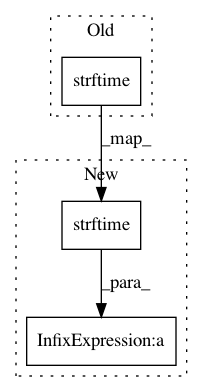

7febde282c0a6dce22347167b7a589c469e61e2b,marsoppy.py,OrbitViewWindow,step_draw,#OrbitViewWindow#,131
Before Change
outline=earth["color"], width=3)
localtz = datetime.now().astimezone().tzinfo
oppdate = ephem.to_timezone(self.opp_date, localtz)
opp_str = oppdate.strftime("%Y-%m-%d")
if xn < self.width/2:
if yn < self.height / 2:
anchor = "se"
else:
After Change
outline=earth["color"], width=3)
localtz = datetime.now().astimezone().tzinfo
oppdate = ephem.to_timezone(self.opp_date, localtz)
opp_str = oppdate.strftime("%Y-%m-%d") + \
"\n%.3f AU\n%.1f"" % (earthdist, size)
if xn < self.width/2:
if yn < self.height / 2:
anchor = "se"
else:
In pattern: SUPERPATTERN
Frequency: 3
Non-data size: 3
Instances
Project Name: akkana/scripts
Commit Name: 7febde282c0a6dce22347167b7a589c469e61e2b
Time: 2020-10-05
Author: akkana@shallowsky.com
File Name: marsoppy.py
Class Name: OrbitViewWindow
Method Name: step_draw
Project Name: akkana/scripts
Commit Name: ad64409d2c129bc6d74f15130b067294dccac32c
Time: 2018-08-14
Author: akkana@shallowsky.com
File Name: cachefile.py
Class Name: Cachefile
Method Name: read_cache_file
Project Name: akkana/scripts
Commit Name: ad64409d2c129bc6d74f15130b067294dccac32c
Time: 2018-08-14
Author: akkana@shallowsky.com
File Name: cachefile.py
Class Name: Cachefile
Method Name: write_cache_file